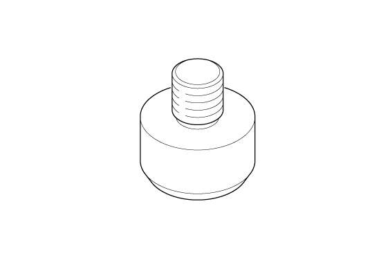
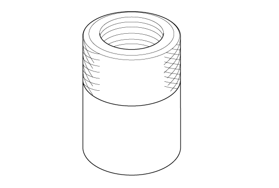
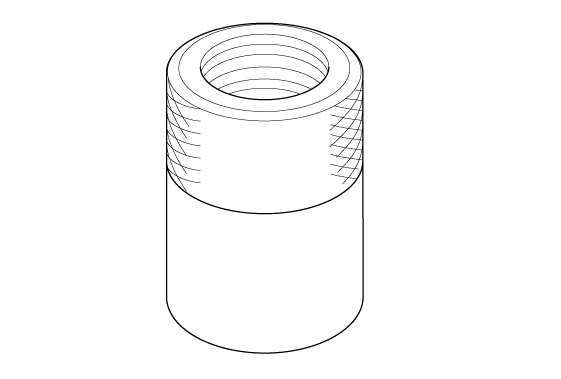

 Courtesy of HONDA, U.S.A., INC.
|
Pilot, 20 mm 07746-0040500 |
 Courtesy of HONDA, U.S.A., INC. Courtesy of HONDA, U.S.A., INC.
|
Driver Handle, 15 x 135L 07749-0010000 |
 Courtesy of HONDA, U.S.A., INC.
|
Threaded Adapter, 22 x 1.5 mm 07XAC-001010A |
 Courtesy of HONDA, U.S.A., INC.
|
Threaded Adapter, 24 x 1.5 mm 07XAC-001020A |